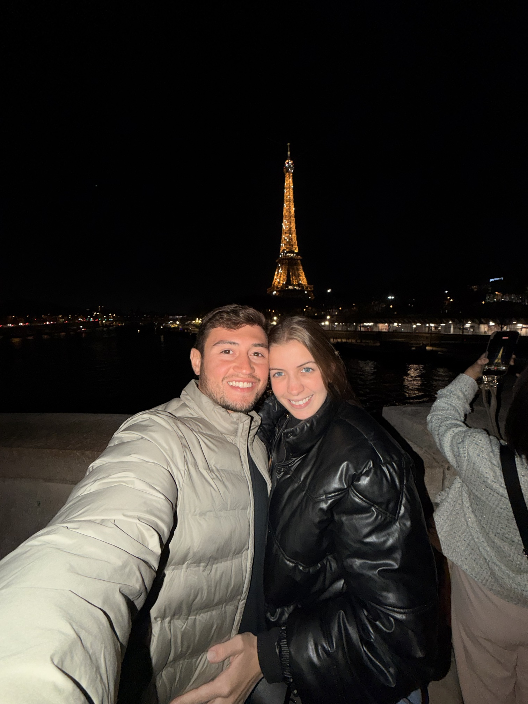

Documentos · Europa
01 / 08
Vai pra Europa? Antes de fechar a mala, confere se você separou esses documentos.
Antes de embarcar
Documentos
Documentos · Europa
02 / 08
Visto? Não precisa.
Você pode ficar até 90 dias, somando todos os países.
Documentos · Europa
03 / 08
Passaporte no prazo
Ele tem que valer 3 meses além da data da volta.
Documentos · Europa
04 / 08
Na fronteira, podem pedir:
- Passagem de volta
- Reserva da hospedagem
- Dinheiro pra viagem
Documentos · Europa
05 / 08
Tchau, carimbo
Agora a fronteira registra sua foto e suas digitais.
Documentos · Europa
06 / 08
ETIAS: o "visto light"
Um cadastro online que o brasileiro vai ter que fazer antes de viajar pra Europa.
- Preenche no site da UE
- Paga € 20
- Vale por 3 anos
Previsão2027Ainda sem data oficial. Hoje, não precisa.
Documentos · Europa
07 / 08
E o seguro?
Leva um com cobertura de € 30 mil ou mais. É o valor cobrado em países como a Itália.
Documentos · Europa
08 / 08
Antes de embarcar
- Passaporte
- Passagem de volta
- Reserva
- Dinheiro
- Seguro